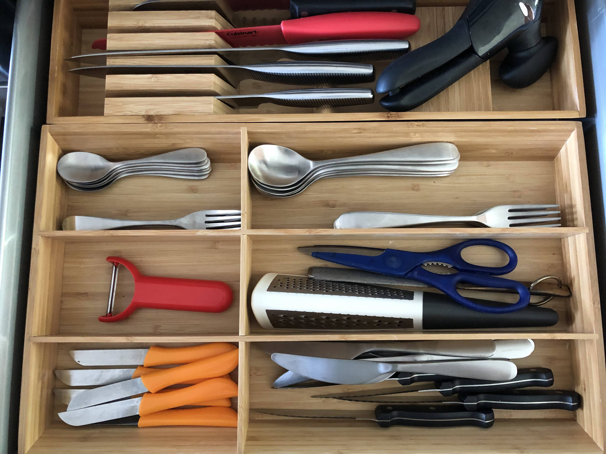
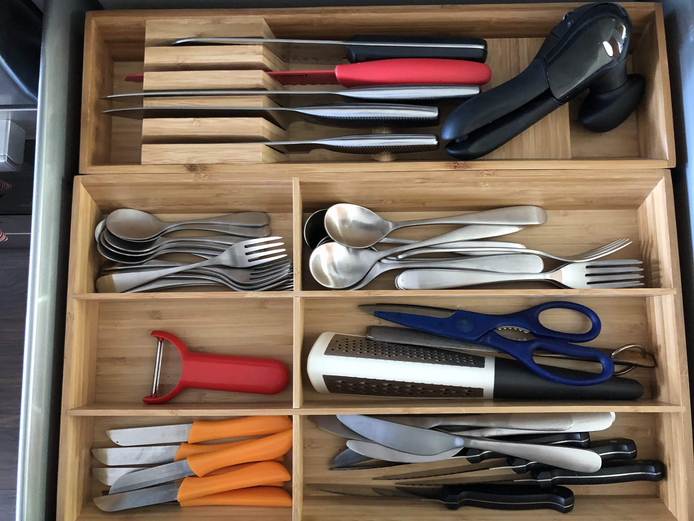
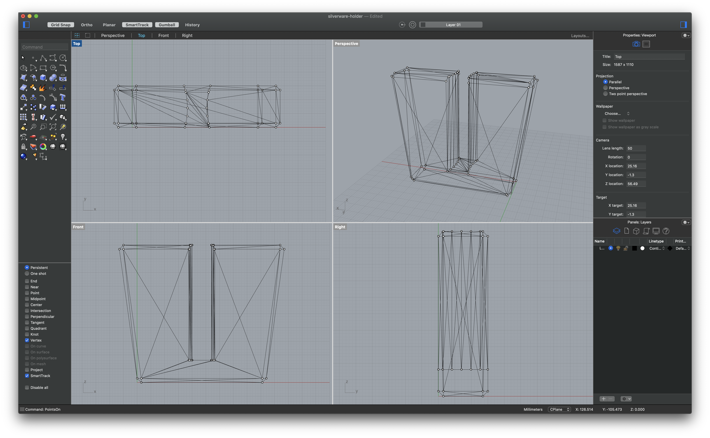
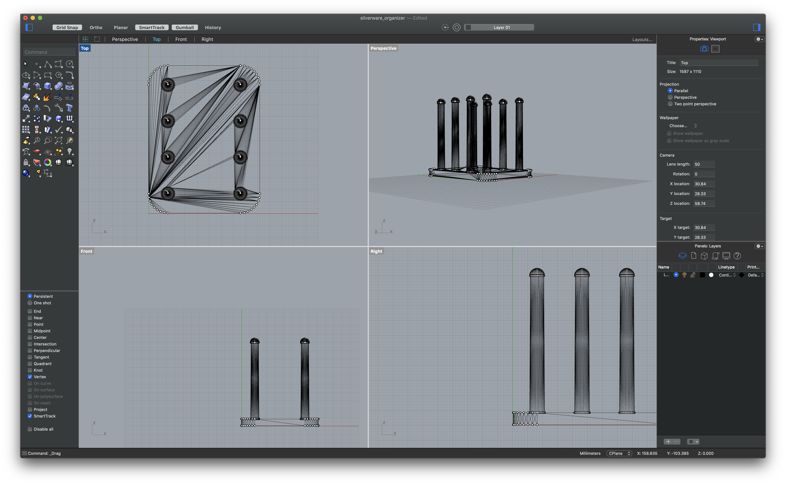
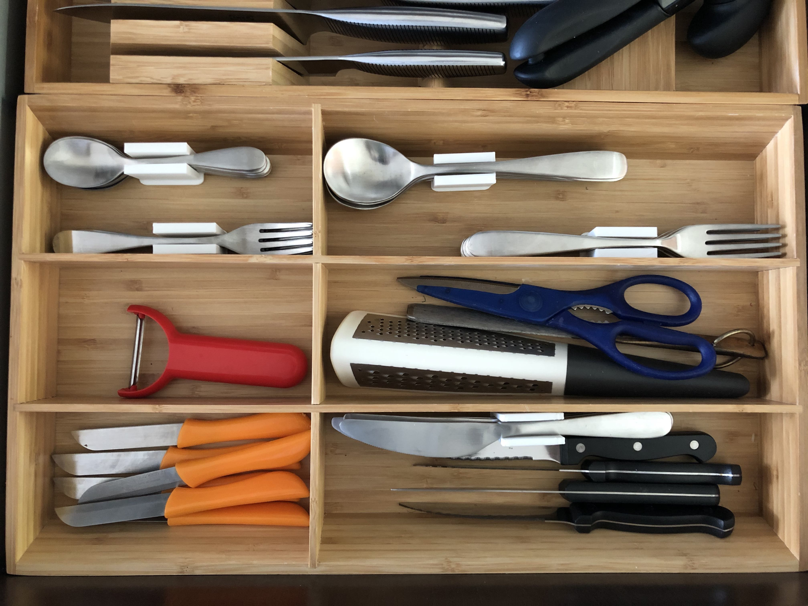
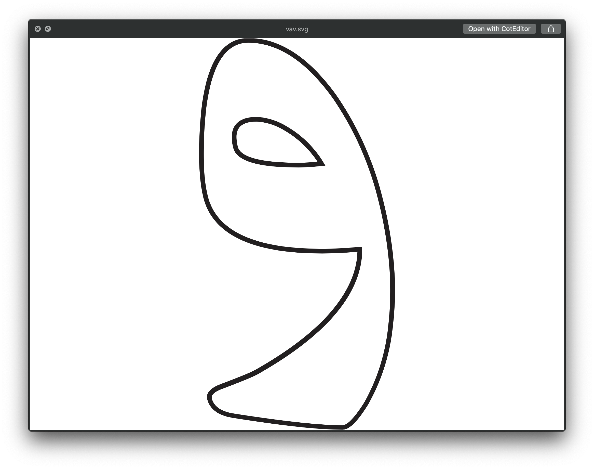
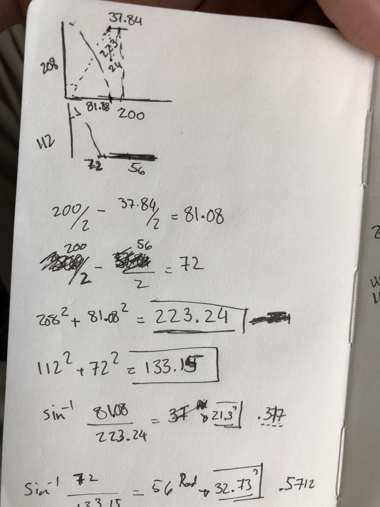
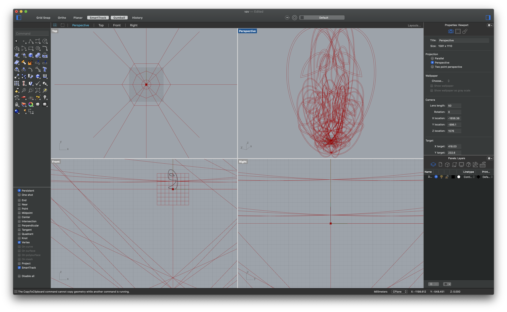

1) Modify the mesh of two STLs to produce a single printable STL.
For this part of the assignment, I decided to fix a problem in my silverware drawer. It’s was simply too meshy!!


I started by looking on Thingiverse.com and picked out my favorite mix of solution and design to combine them. Then, I took the needed measurement for size adjustment!


I wanted to use the first design for the top portion of my final design (original design on Thingiverse), but needed to adjust to the width to make sure my silverware don’t fall over. Then I proceeded by removing the legs from the second design (original files on Thingiverse), and filling the holes and surfaces that became exposed.
Once I was happy with the individual pieces, I continued by aligning them, then joining, and finally reducing mesh numbers.
After couple of minor tweaks, now I’m happy reduced mesh in my my silverware drawer!! (3dm, .stl, gcode)
! 
2) Make a start on a lamp!
My journey for deciding what elements to use for this design and what the design is going to be has been long, but certainly far from being complete … Here’s the progress so far!
I finally found the light bulb I’m designing for, but my friend has it since I was planning on returning it IKEA due to the amount of light it outputs!
But, I’m keeping the light bulb now that I can control the amount of light emitting through this light by designing the perfect lamp(well, hopefully!)
Light bulb size is approximately 200mmX400mm.
I’ve identified the main piece of my design, which is the Farsi letter و(v). And I’m committed to use grasshopper for most (if not all) of my design.

I started by creating its shape in Adobe Ai, and imported it into Rhino. The design idea I’m pursuing right now is using this letter as a way to join two polygon surfaces shown in the sketches below. Sizes and angles required are also shown in that sketch based on the measurements for the light bulb.

So far here’s a screenshot of where things are currently at!
